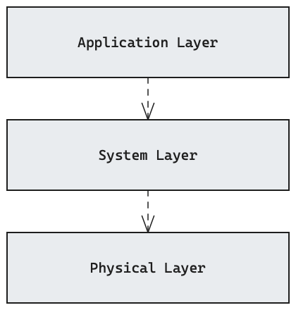
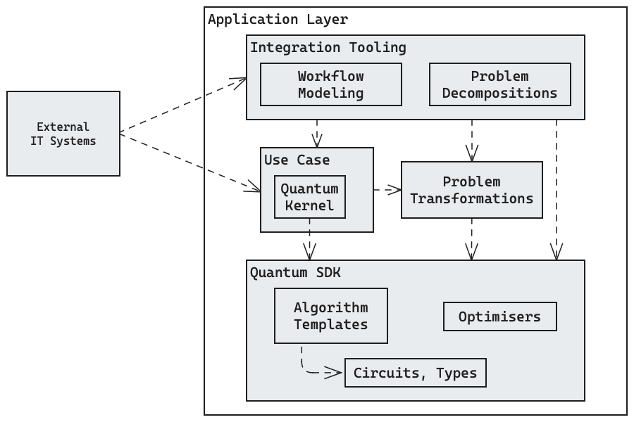
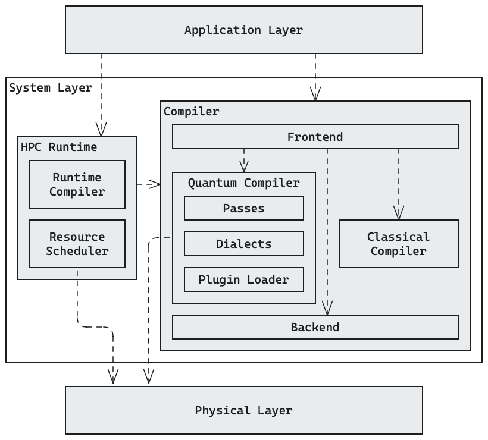
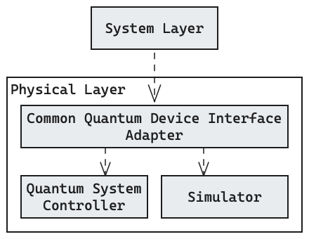

Building Block View
Whitebox Overall System

Motivation
Quantum software is highly complex, so we use a layered architecture to decompose such systems into three layers: the Application, System, and Physical Layer. We rectify this decision with the following three perspectives:
- Abstraction: Software in the Application Layer is implemented on a high level and independently from concrete quantum devices. The System Layer compiles high-level specifications into device-specific instructions and software in the Physical Layer targets specific devices with low-level control.
- Skills: Developing software for the Application Layer requires abstract knowledge of quantum computing (e.g. the circuit model) but no understanding of its physical implementations is required. For working on the System Layer, developers need to have a broad understanding of various quantum device architectures and deployment concerns. Detailed knowledge for concrete quantum devices is required to program and operate quantum backends in the Physical Layer.
- Operation: In the Application Layer, manual programming or specification for individual use cases is required. Compilation in the System Layer is mostly automated with only high-level compilation settings needing to be configured. Execution on the Physical Layer is fully automated.
Contained Building Blocks
Application Layer
This layer will involve use-case-specific quantum and hybrid programs, written in high-level languages using algorithms, SDKs and libraries.
Quality Characteristics
- The Application Layer must be extensible for new quantum and hybrid algorithms.
- The Application Layer must be extensible for new quantum programming abstractions.
- The Application Layer must be extensible for new quantum applications.
See also
System Layer
The System Layer is responsible for compiling high-level program specifications from the Application Layer to low-level, device-specific instructions to be executed in the Physical Layer, taking into account the quantum device architecture (e.g. physical implementation such as superconducting or neutral atom qubits, topology / connectivity) and possibly HPC concerns.
Quality Characteristics
- The System Layer must be extensible for new quantum device architectures.
- The System Layer must be extensible for new quantum compilation passes.
- The System Layer should be extensible to work with different intermediate representations.
- The System Layer should minimise execution cost by optimising generated instructions.
See also
Physical Layer
The Physical Layer executes the programs it receives from the System Layer by controlling the physical quantum device. It is also responsible for calibrating the device and monitoring it (e.g. fidelities).
Quality Characteristics
- The classical co-processor must be able to run decoders in real-time.
See also
Important Interfaces
Between the Application and System Layers
The interface between the Application and System Layers needs to serve the following needs:
- It needs to transmit program specifications from the Application Layer to the System Layer. In the short term, low-level representations like OpenQASM or Qrisp's intermediate representation format will suffice but in the long term, programs written in high-level quantum programming languages (like QPI) will be transmitted, represented as their source code.
- It needs to allow submitting program specification for compilation and execution with suitable options available for configuring the compiler. Furthermore, the progress and results of execution and compilation tasks should be reported back to the Application Layer.
In the reference implementation, this interface will at first be realised with Qrisp's MLIR interface which currently supports low-level states and operations but is intended to capture Qrisp's high-level features at some point. The concrete interface for submitting compilation and execution jobs is yet to be determined.
Between the System and Physical Layers
The interface between the System and Physical Layers needs to serve the following needs:
- It needs to allow the System Layer to submit low-level quantum program specifications to the Physical Layer.
- It needs to allow the System Layer to query properties (like hardware architecture, instruction set, topology or gate fidelities) of the quantum device managed by the system layer.
In the reference implementation, the Quantum Device Management Interface (QDMI) will be used as its Job and Query interfaces satisfy these needs exactly.
Level 2
Info
The internal architecture of each layer is under the authority of the respective team. This section shallowly digs into the details the layers nonetheless to give an overview of each layer's responsibilities. Understanding this separation of concerns is a necessary precondition for analysing the interfaces between the layers.
White Box Application Layer

Motivation
A lot of different software components exist that can be classified as part of the Application Layer and the above figure presents a rough sketch of their dependencies. Most quantum software that is freely available today makes use of (usually python-based) SDKs to build quantum circuits. Furthermore, many tools exist for transforming various scientific, engineering and commercial problems into quantum formulations, and there exist several tools for configuring these transformations in a low-code manner. Fully developed quantum solutions will likely have to implement a custom component in the long term to interface between existing systems and the quantum software stack.
Contained Building Blocks
- Use Case: This component encapsulates the configuration of the quantum software stack for a specific use case. It is also responsible for interfacing with External IT Systems if the quantum application is to be integrated into an existing IT system (see context section). As the Use Case component characterises the interface between quantum and classical computation, it will have one or more dedicated Quantum Kernels which encapsulate the parts of the program that are to be run on a quantum computer. Use Case components are highly specific for the context and task they are used in. Reusable code will often live in the Quantum SDK or Problem Transformation libraries.
- Integration Tooling: Some tools specifically target the task of integrating quantum applications into existing IT infrastructure. This includes for example Workflow Modeling tools (e.g. with the Kipu Quantum Hub) and Problem Decomposition tools (e.g. with the ProvideQ Toolbox) which improve the accessibility of quantum computing and provide standardised web APIs which can be integrated into typical IT infrastructure more easily. Integration tools typically depend on Use Case implementations which they wrap with their own abstractions and interfaces but they can also take a more fine-grained approach and provide direct access to the Problem Transformation and Quantum SDK building blocks.
- Problem Transformations: This component is symbolic for the many available tools for transforming scientific, engineering and commercial problems into quantum formulations (e.g. qubovert, Qiskit Finance). Many of these tools directly use the Quantum SDK's building blocks.
- Quantum SDK: The Quantum SDK contains common building blocks for quantum software such as circuits and types (e.g. qrisp's quantum variables), algorithm templates (e.g. VQE, QAOA, QPE) and optimisers (e.g. Adam or Rotosolve) for hybrid algorithms. Popular examples for Quantum SDKs include Eclipse's qrisp, IBM's Qiskit and Xanadu's Pennylane.
Important Interfaces
We have described the building blocks merely through an abstract characterisation above, and we will characterise the interfaces between them in a similar fashion:
- One major interface is provided by the Quantum SDK, the language that developers use to specify their quantum applications, and therefore, Use Case implementations, Problem Transformations and some Integration Tooling may depend on the chosen Quantum SDK. The 2025 Quantum Open Source Survey shows that there is currently no single favourite among the available Quantum SDKs, so to facilitate adoption of a standardised quantum software stack, it will be important to build integrations of multiple popular SDKs into the rest of the stack.
- Use Case implementations and Problem Transformations provide highly individual interfaces since the problems they accept depend on their purpose.
- Integration Tooling can provide access to the Use Case implementations and Problem Transformations with a unified interfaces (e.g. for progress updates and configuration) but the data/payload types for the submitted problem instances are still specific to the Use Case implementation and Problem Transformation which they wrap.
White Box System Layer

Motivation
The main task of the System Layer is compile translate high-level quantum program specifications into low-level programs that can be executed on physical quantum hardware. Furthermore, the system layer also covers the integration into high-performance computing (HPC) systems. These two responsibilities are realised through separate building blocks: the HPC Runtime component and the Compiler component.
Contained Building Blocks
- HPC Runtime: This component covers the integration of quantum and hybrid
programs into HPC systems.
It includes the following components:
- The Runtime Compiler is based on the full Compiler component but focuses on compilation tasks which must be done during the runtime of a quantum HPC workload (e.g. re-optimising circuits instructions for changing properties of the hardware such as gate fidelities).
- A specialised Resource Scheduler might be necessary to allow the HPC system to take into account QPU resources.
- Compiler: The purpose of a hybrid quantum compiler is to translate the
high-level program specification from the application to low-level
instructions executable on the physical layer.
It includes the following sub-components:
- Frontend: Acts as a facade to the Compiler that parses some
program specification format (e.g. source code or an intermediate
representation), splits it into a classical and a
quantum kernel, and calls the Classical
and Quantum Compiler with these kernels, respectively.
The term "frontend" is to be understood as a programming language frontend
for the compiler (cf.
gcc's page on frontends), meaning frontends for different languages or SDKs could be integrated in the future. - Classical Compiler: Integrates established compiler infrastructure (e.g.
gcc) to compile classical parts of the program with state-of-the-art optimisations. - Quantum Compiler: Compiles high-level specifications of quantum-kernels to low-level, device-specific instructions. The compilation process involves passes and dialects and it is extensible through a plugin system.
- Backend: The backend is a bridge between the Compiler and the Physical Layer.
- Frontend: Acts as a facade to the Compiler that parses some
program specification format (e.g. source code or an intermediate
representation), splits it into a classical and a
quantum kernel, and calls the Classical
and Quantum Compiler with these kernels, respectively.
The term "frontend" is to be understood as a programming language frontend
for the compiler (cf.
Important Interfaces
- As discussed in the interfaces section for the overall system, the interface to the Application Layer needs to allow submitting program specifications for compilation and execution. There might be different formats (i.e. languages) for high-level program specifications and the compiler will be able to handle different formats through multiple Frontend components, one for each format.
- The overall system interface section also discussed that the interface between the System and Physical Layer needs to allow querying device characteristics and submitting jobs. These capabilities are needed by the Quantum Compiler (for device-specific compilation) and Resource Scheduler (for job submission and resource allocation), respectively.
- Another important interface will be the plugin interface of the Quantum Compiler which will allow for proprietary extensions of the compilation task to contribute compilation passes or dialects.
- The remaining interfaces in the System Layer are internal.
The reference implementation's concrete interfaces between adjacent layers are specified in the overall system section. The Quantum Compiler's plugin interface is still to be designed.
White Box Physical Layer

Motivation
The Physical Layer is responsible for the execution of quantum programs, either on physical quantum hardware or a classical simulator. Its implementation is highly dependent on the hardware architecture, vendor and concrete device. As such, the key architectural characteristic here is to either have the vendor implement our interface towards the System Layer, or to implement an adapter that translates our interface to the vendor's interface.
Contained Building Blocks
- Common Quantum Device Interface Adapter: This component acts as a facade to the quantum device's internals by implementing the common quantum device interface used between the System and Physical Layer. If the quantum simulator or the quantum device firmware already implements the common quantum device interface, this component is not needed.
- Quantum System Controller: This component contains the firmware of the physical quantum device. It is responsible for controlling the physical quantum device, for example triggering lasers and sensors in superconducting hardware.
- Simulator: Instead of a physical quantum device with a Quantum System Controller the execution of the quantum program can also be carried out by a quantum computing Simulator running on classical hardware. A Physical Layer implementation will usually either have a simulator or a physical quantum device but not both.
Important Interfaces
- The common quantum device interface used by the System Layer to interact with the Physical Layer is described in the overall system section.
- Within the Physical Layer, the protocols and interfaced used are highly dependent on the concrete quantum device or simulator. This dependency is hidden to the System Layer by the common quantum device interface.
The reference implementation's concrete interfaces between adjacent layers are specified in the overall system section.